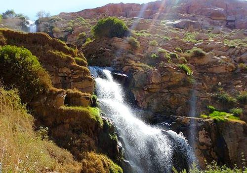
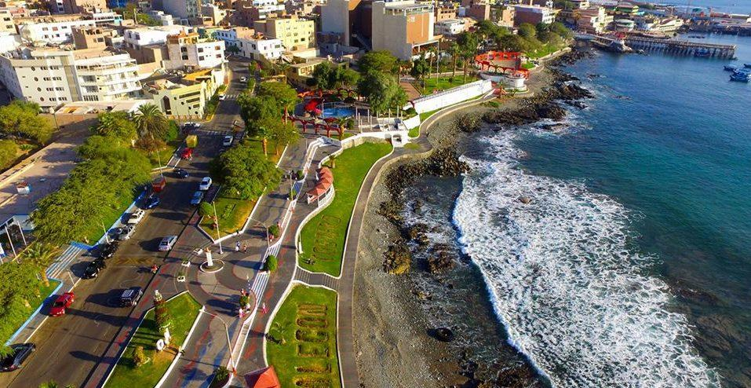
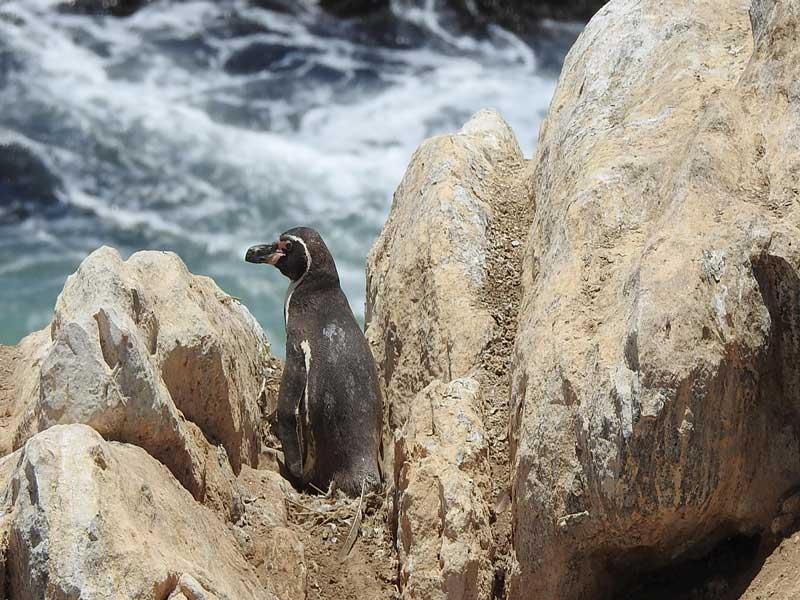
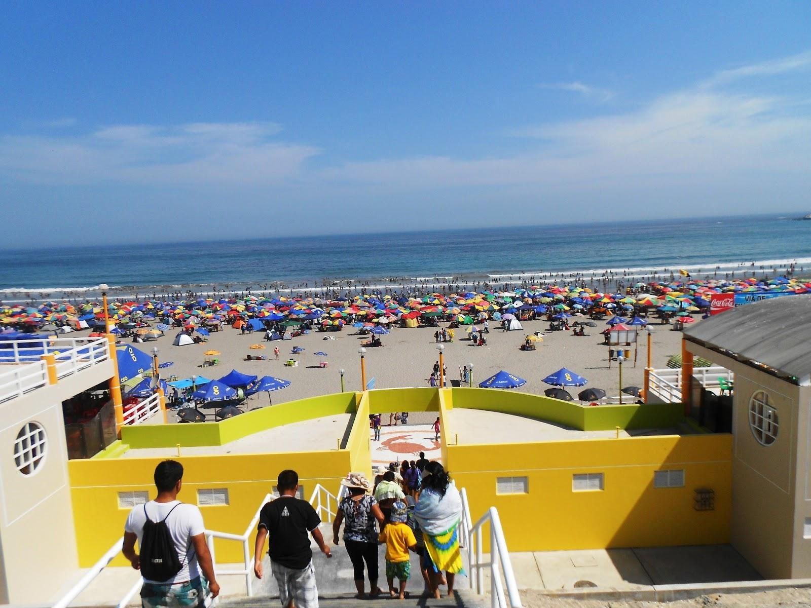
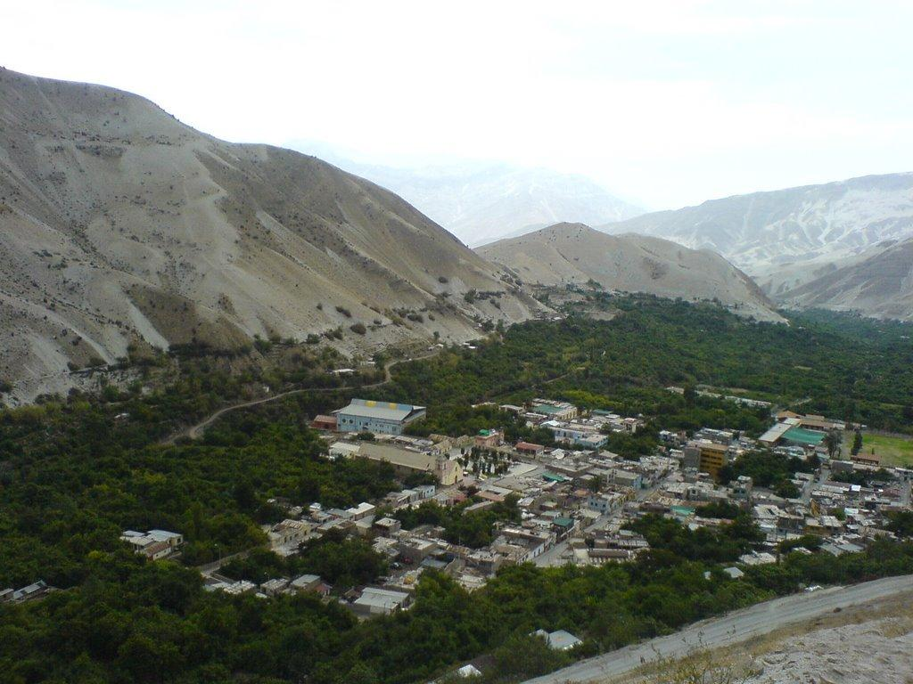
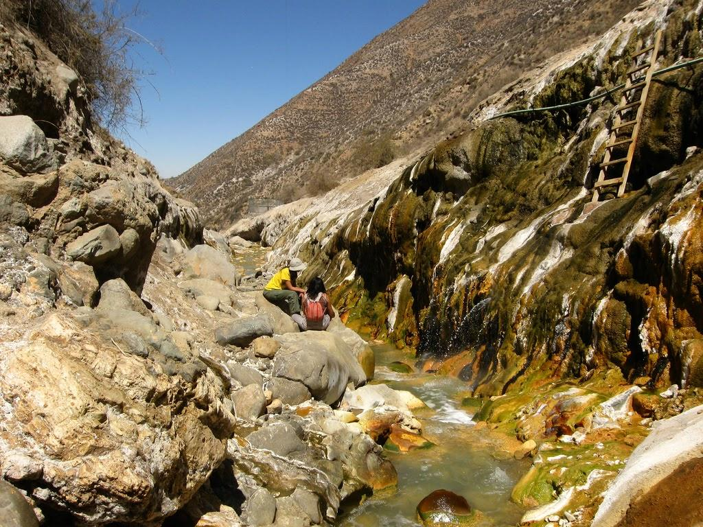
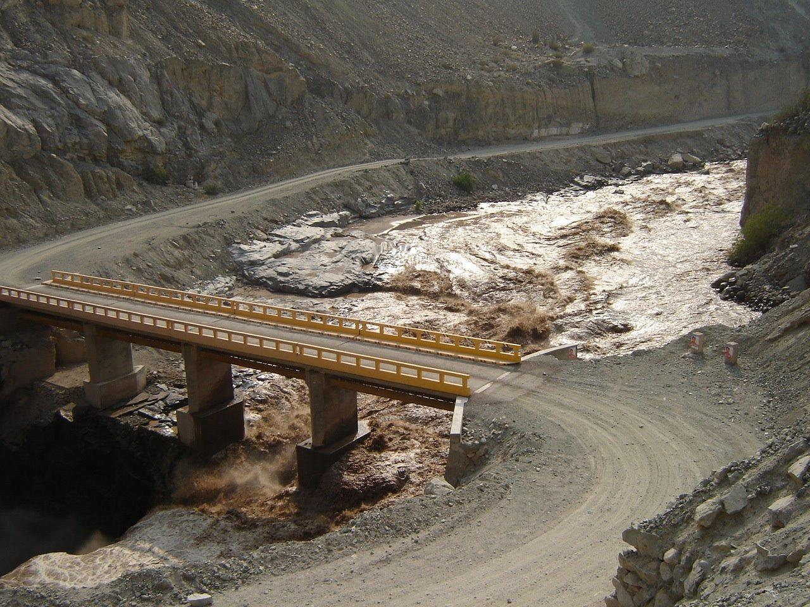

Mariscal Nieto
Cerro Baúl
Formación natural ubicada en Torata, reconocida por su cima plana y su importancia arqueológica.
Conoce mediante imágenes los paisajes y atractivos turísticos de las tres provincias de Moquegua.
Mostrando 9 imágenes
Formación natural ubicada en Torata, reconocida por su cima plana y su importancia arqueológica.

Atractivo natural de Torata, conocido por sus caídas de agua y paisajes.

Espacio emblemático de la ciudad, rodeado de arquitectura histórica y tradicional.

Paseo junto al litoral donde se puede disfrutar del paisaje marino y la brisa del océano.

Área natural costera reconocida por su fauna marina y sus paisajes junto al océano.

Una de las playas conocidas de Ilo, visitada por sus paisajes y espacios de recreación.

Valle conocido por sus paisajes, clima agradable y producción agrícola.

Aguas termales ubicadas en un entorno natural de la provincia General Sánchez Cerro.

Atractivo natural ubicado en el distrito de Quinistaquillas.